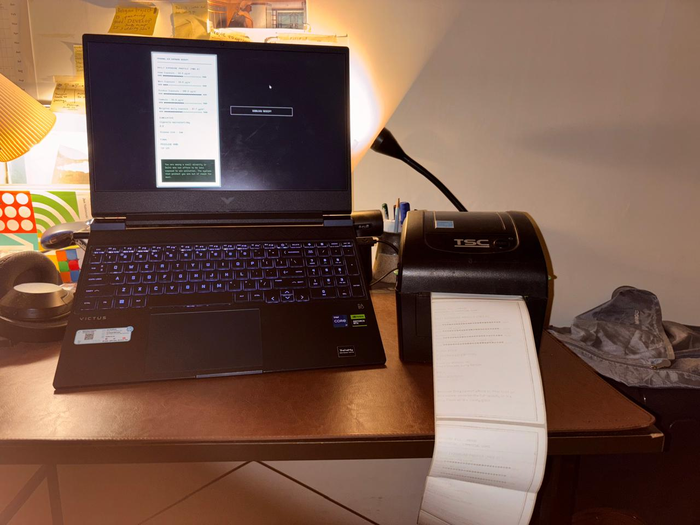

Delhi AQI
View liveThis installation confronts something that has, over time, become the new normal in the national capital, Delhi. Schools and colleges now cancel more days for air pollution than for almost any other reason. Delhi doesn't lack awareness, people already know the numbers are bad.
What this project pushes back against is the urgency that's gone missing, because the people who can afford it have quietly solved the problem for themselves, at a price everyone else ends up paying.
Upper middle class residents of Delhi reduce their own exposure through purifiers, sealed vehicles, and filtered indoor spaces, but the pollution itself does not go anywhere. It stays in the shared air, and lands more heavily on people who cannot filter it out, particularly those whose work keeps them outdoors for long hours.
A guard at a gate, someone delivering food, domestic workers moving between homes, vendors whose entire business sits on the street. A public health crisis has effectively been managed as a private convenience.
This project pairs a browser based data visualization with a thermal printer to make that inequality visible instead of just stating it. It works off a receipt, an object we glance at, pocket, and discard, engaging with it only long enough to confirm a transaction has gone through.
Much like how most of us engage with air quality data itself, checking it, maybe mentioning it, then moving on, because for many the pollution stays manageable, filtered out before it reaches us. The piece collects a few personal inputs and prints a receipt itemizing your daily PM2.5 exposure.
The turn happens at the point of printing. What comes out is not your receipt. It belongs to someone in your immediate orbit, someone whose exposure you've had no reason to think about, because they've been absorbing what you paid to avoid.
The installation was never meant to hand you a list of things to do differently. It works as a piece of advocacy instead, bringing into view an inequality that most of us live alongside every day without ever registering it, and letting that realisation stay with you after you walk away.
The receipt closes with the line "Thank you for your contribution. This person's lungs have been charged accordingly." It is there to make the cost impossible to miss: the polluted air you have paid to filter out has not disappeared, and the people who cannot afford to buy cleaner air are the ones paying for it with their lung health.

Every receipt is personalised, calculated from the information each visitor enters before it prints. Here is how each line on it is worked out.
A time-weighted average of the PM2.5 you breathe in a day. Each place you spend time in gets a PM2.5 level from its location and filtration, weighted by your hours there.
Berkeley Earth's formula: breathing 22 μg/m³ of PM2.5 for a full day is roughly equal to smoking one cigarette.
The same for everyone, not calculated from your answers. About 12% of Delhi is upper-middle-class, the small share of the city with the money to shield itself. Clean air has quietly become a luxury most of Delhi cannot afford.
Inferred from each job profile and cross-checked against Fairwork India 2024 and PLFS 2022–23 for working hours, wages and conditions.
The exposure on the receipt isn't yours. It belongs to the person you spend the most time with. The figures are an approximation, not a record of any real individual, showing how far apart two lives can be even when they share the same hours of the day.
This project targets people between 25 and 40, financially independent, living inside Delhi's pollution crisis while remaining largely insulated from it.
This is the group holding real economic power, social capital, and political voice, the people best positioned to push for systemic change, and also the people least often confronted with a reason to.
- CPCB / DPCC / SAFAR AQEWS: PM2.5 historical data, 2011–2024
- AQLI 2025, University of Chicago EPIC: life expectancy loss methodology
- Burnett et al. (2014), Environmental Health Perspectives: disease risk functions
- Berkeley Earth: cigarette equivalence methodology
- Fairwork India 2024, Oxford Internet Institute: gig worker conditions
- PLFS 2022–23, Ministry of Statistics, Government of India: worker earnings and hours